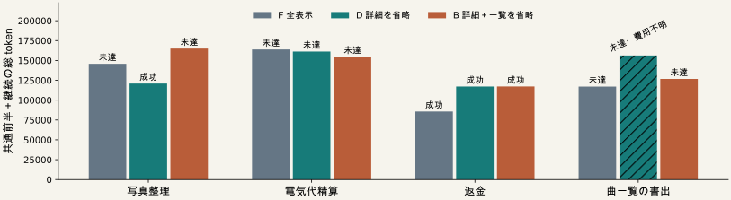

必要な情報を残すハーネス制御
API一覧と詳細の表示比較
10月23日 API表示の比較 / 01
一覧を残すことが、品質と総費用にどう響くか
最終目標：必要な情報・処理と最終品質を守り、仕事全体の費用を減らす。
| 条件 | 古い詳細 | API一覧・説明 |
|---|
| F 全表示 | 保持 | 保持 |
| D 詳細を省略 | 由来が一致する区間を省略 | 保持 |
| B 詳細＋一覧を省略 | Dと同じ区間を省略 | 由来が一致する区間を省略 |
Python状態・公開スキーマ・原文への参照・契約返信・予算を共通にする。
既知４課題の同じ８応答後、各３条件を一度ずつ。通常方式の開発比較。
各16生成・継続120,000 token・480秒。省略は境界で一度だけ。最新応答、操作、リテラル、混合出力を保持。初回cache_prompt=false。未閲覧12課題は使用していない。
10月23日 API表示の比較 / 02
全12予定条件を、成否と仕事全体の費用で見る
| 課題 | F 全表示 | D 詳細を省略 | B 詳細＋一覧を省略 |
|---|
| 写真整理 | 未達
145,850 | 成功
120,935 | 未達
165,015 |
| 電気代精算 | 未達
163,918 | 未達
161,225 | 未達
154,720 |
| 返金 | 成功
85,697 | 成功
117,223 | 成功
117,305 |
| 曲一覧の書出 | 未達
117,100 | 未達
156,265＋不明 | 未達
126,734 |
数値：共通前半＋継続の全入力出力 token。評価済み12、未評価0、未実行0。
不明費用と未実行をゼロで埋めず、失敗して安く終了した条件を改善に数えない。
成否は独立評価器。モデル使用量不明でも、作用と片付けが既知の場合だけ最終状態を評価する事前規則。全12条件の費用が確定しなければ総費用の採用基準は未達。
10月23日 API表示の比較 / 03
初回の入力短縮と、終了までの総費用を分ける

Dの初回削減：1,447 ／ 258 ／ 782 ／ 1,629 token。最終費用とは別の指標。
棒は共通前半と継続の既知費用。斜線がある場合は、さらに不明費用が存在する。
キャッシュした入力も論理tokenへ含む。処理入力・出力・モデル呼出し・API・時間は別集計。縦軸は０から。失敗条件や未実行を除外しない。
10月23日 API表示の比較 / 04
取得・実行・失敗・推論器の稼働も記録する
| 全４課題の合計 | F | D | B |
|---|
| 前半＋継続AI呼出し | 54 | 58 | 61 |
| 継続API | 173 | 162 | 122 |
| 復元API | 51 | 51 | 51 |
| 使用量不明の呼出し | 0 | 1 | 0 |
| 継続実時間（秒） | 1,308.5 | 1,354.0 | 1,359.1 |
推論器：ロード10.1秒、常駐4,112.9秒。比較終了後に停止済み。
APIが少ないことだけでは、要求を満たす仕事が効率化されたとは判断しない。
実験用の状態復元・評価と運用時の継続を区別。評価器単独の秒数は未計測で、推論器稼働全体に含む。全条件共通の前半モデル費用を足すが、同じ元実行を実際に何度も生成したという意味ではない。
10月23日 API表示の比較 / 05
投稿の中心へ使える範囲を限定する
固定した開発上の採用基準：未達
一覧保持の追加価値：支持条件を満たさない
| 制約 | 解釈 |
|---|
| 既知４課題、各１回 | 一般的な性能維持・非劣性の証明ではない |
| 返金はD/Bの基礎入力が同じ | その差を一覧の効果と呼ばない |
| 写真F/DのファイルDBは一致 | 成功差をファイル整理の改善と断定しない |
| 段階的な開示には先行方式がある | 通常方式を独自アルゴリズムにしない |
10月23日：主張・主要結果・概要を絞る。10月31日：レター投稿完了を目指す。
採用条件は全12件評価・使用量既知・監査合格、DがF/Bの成功を失わず総tokenがFより少なくB以下。一覧の効果を支持するには入力が異なる課題でD成功/B失敗も必要。中心的な新規性や一般的な品質維持が自動的に成立するわけではない。